<!DOCTYPE html>
<html lang="en">
  <head>
    <meta charset="utf-8" />
    <meta name="viewport" content="width=device-width, initial-scale=1.0, maximum-scale=1.0, user-scalable=no" />

    <title>Introduction to Polkadot</title>
    <link rel="shortcut icon" href="./../../../favicon.ico" />
    <link rel="stylesheet" href="./../../../dist/reset.css" />
    <link rel="stylesheet" href="./../../../dist/reveal.css" />
    <link rel="stylesheet" href="./../../../assets/styles/polkadot-theme.css" id="theme" />
    <link rel="stylesheet" href="./../../../css/highlight/shades-of-purple.css" />

    <link rel="stylesheet" href="./../../.././assets/styles/custom-classes.css" />
    <link rel="stylesheet" href="./../../.././assets/styles/polkadot-theme-base.css" />
    <link rel="stylesheet" href="./../../.././assets/styles/PBA-theme.css" />
    <link rel="stylesheet" href="./../../.././plugin/design-system/index.css" />

  </head>
  <body class="site">
    <header class="site-header">
      <a href="">
        
      </a>
      
    </header>
    <main class="site-reveal reveal">
      <article class="slides">
        <section  data-markdown><script type="text/template">

# Introduction to Polkadot
</script></section><section  data-markdown><script type="text/template">
## Introduction to Polkadot

In this section, we will finally learn about Polkadot, its value proposition, how it works at a high level, and touch on all the key concepts you will expect to learn about throughout the rest of module 5.
</script></section><section  data-markdown><script type="text/template">
## What is Polkadot?

Polkadot is a scalable heterogenous sharded multi-chain network.
</script></section><section  data-markdown><script type="text/template">
## Polkadot is a Layer 0 Blockchain

<table class="layers-table">
<tr>
	<td style="background-color: #444; color: #fff;">Layer 3</td>
	<td>
		An application or platform which is hosted by an L2.
	</td>
</tr>
<tr>
	<td style="background-color: #70003C; color: #fff;">Layer 2</td>
	<td>
		An application or platform which is hosted by an L1.
	</td>
</tr>
<tr>
	<td style="background-color: #BA0063; color: #fff;">Layer 1</td>
	<td>
		A basic blockchain which administers a native token and hosts one or more applications.
	</td>
</tr>
<tr>
	<td style="background-color: #E6007A; color: #fff;">Layer 0</td>
	<td>
		A secure consensus-provider. A pure L0 has no ability to host applications. An impure L0 may be able to host limited fixed-function applications (e.g. token hosting), but is primarily used to host other blockchains.
	</td>
</tr>
<table>
</script></section><section  data-markdown><script type="text/template">
## What is Polkadot Trying to Solve?

Polkadot attempts to solve 3 core problems with blockchains today:

1. Scalability
2. Interoperability
3. Shared Security
</script></section><section  data-markdown><script type="text/template">
## The Value of Scalability

We need to create Web3 systems which support the needs of 8 billion people.

Blockchains will be a key part of the Web3 infrastructure.
</script></section><section  data-markdown><script type="text/template">
## The Problem with Scalability Today

- **Bitcoin**: Limited in abilities.
- **Ethereum**: Limited in transaction bandwidth.
- **Other Single Chain Solutions**: Same fundamental problem as Ethereum.
- **Layer 2 Solutions**: Likely leads to centralization risks.
</script></section><section  data-markdown><script type="text/template">
## Specificity Leads to Scalability

Systems which try to do everything will not do anything the best.

Generalized blockchains like Ethereum are not optimized.

Heterogeneity is the way.
</script></section><section  data-markdown><script type="text/template">
## Parallelized Execution is Key

Polkadot has developed a protocol which allows different shards to execute in parallel environments.

The sharding solution can itself be replicated, which allows for infinite scaling.
</script></section><section  data-markdown><script type="text/template">
## The Value of Interoperability

Specialized blockchains rely on each other to provide real world value to end users.

Users want to complete complex end to end scenarios, and will use multiple specialized blockchains to do that most efficiently.

Connecting new and existing ecosystems provides users with effortless access to the growing Web3 ecosystem.
</script></section><section  data-markdown><script type="text/template">
## The Problem with Interoperability Today

- Differences in fundamental protocols means blockchains cannot talk to each other.
  - Cryptography
  - Networking
  - Proofs
- Custom bridges is a quadratic problem: $O(n^2)$.
- Bridges do not provide economic security between chains.
</script></section><section  data-markdown><script type="text/template">
## The Value of Shared Security

Blockchains require economic incentives to build and secure the chain.

Shared security can help reduce the total economic burden to provide security to many blockchains.
</script></section><section  data-markdown><script type="text/template">
## The Problem with Multi-Chain Security Today

- Bootstrapping problem.
- Tokens often provide no utility or value.
- Inherent competition of resources.

Today, it's mostly "ponzi-nomics".
</script></section><section  data-markdown><script type="text/template">
## Polkadot Architecture

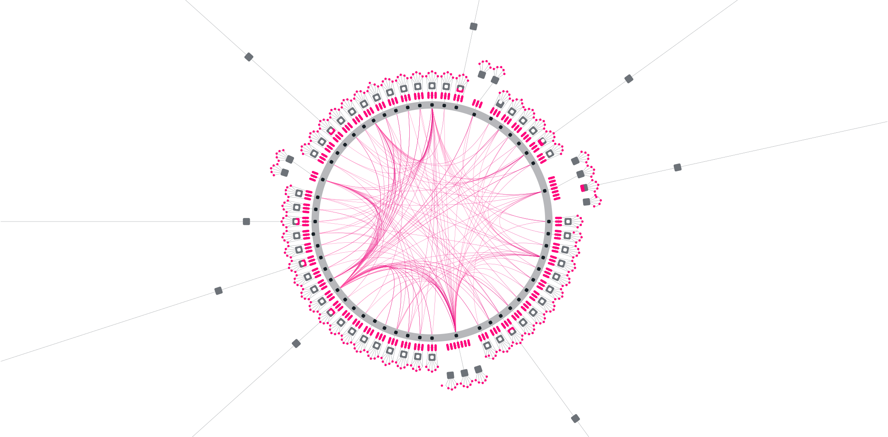
</script></section><section  data-markdown><script type="text/template">
## Polkadot Architecture (Simpler)


</script></section><section  data-markdown><script type="text/template">
## The Components of Scalability

How does Polkadot provide the backbone for the Web3 future?
</script></section><section  data-markdown><script type="text/template">
## Relay Chain

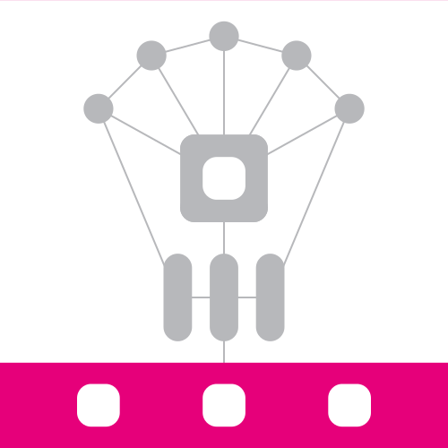

The heart of Polkadot, responsible for the network’s shared security, consensus and cross-chain interoperability.
</script></section><section  data-markdown><script type="text/template">
## Parachain

"Parallelized Chains" = Parachains

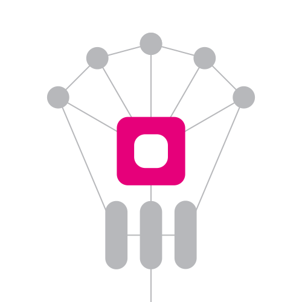

Sovereign blockchains that can have their own tokens and optimize their functionality for specific use cases.
</script></section><section  data-markdown><script type="text/template">
## Parathreads

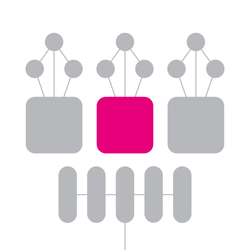

Similar to parachains but with a pay-as-you-go model. More economical for blockchains that don’t need continuous connectivity to the network.
</script></section><section  data-markdown><script type="text/template">
## The Components of Shared Security

How does Polkadot provide security to itself and connected Parachains?
</script></section><section  data-markdown><script type="text/template">
## Nominated Proof of Stake

Polkadot uses an NPoS system to collect and select network participants to secure the network.

Those who are selected will use their DOT token as collateral for doing their job correctly. Good actors will be rewarded, while bad actors will have their collateral slashed.
</script></section><section  data-markdown><script type="text/template">
## Nominators

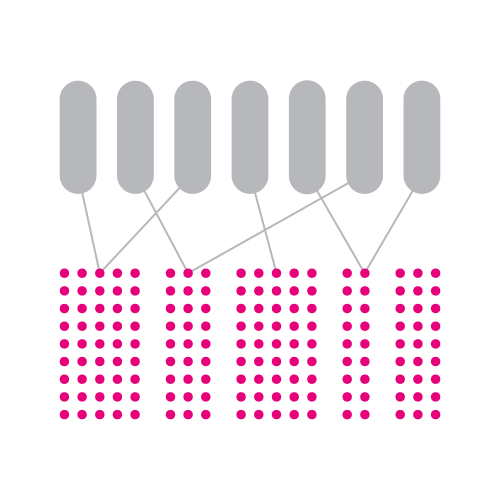

Secure the Relay Chain by selecting trustworthy validators and staking dots.
</script></section><section  data-markdown><script type="text/template">
## Validators

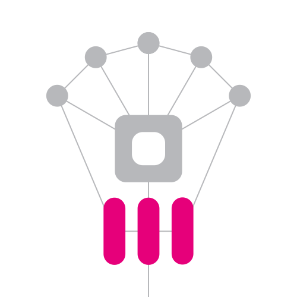

Secure the relay chain by staking dots, validating proofs from collators and participating in consensus with other validators.
</script></section><section  data-markdown><script type="text/template">
## Collators

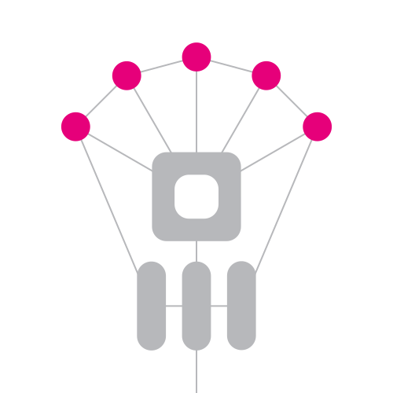

Maintain shards by collecting shard transactions from users and producing proofs for validator.
</script></section><section  data-markdown><script type="text/template">
## Parachain Validation Function (PVF)

Validators can verify the state transition of any Parachain given 3 simple pieces of data:

- The Parachain's Wasm Runtime
- The Parachain's Block
- The Parachain's State Proof (Proof of Validity)
</script></section><section  data-markdown><script type="text/template">
## Back to The Game Console Analogy

<div class="flex-container">
<div class="left">


Substrate Client

</div>
<div class="right">


Substrate Runtime

</div>
</div>

<aside class="notes"><p>We used this analogy when describing Substrate, and the distinction between the client and the runtime.</p>
</aside></script></section><section  data-markdown><script type="text/template">
## Polkadot is an All-In-One


</script></section><section  data-markdown><script type="text/template">
## Mechanics of Parachain Validation

Imagine:

- 1,000 Validators
- 100 Parachains
- 10 Validators per Parachain
- Random Assignment of Validators
- Disputes Reporting

We are able to derive strong security guarantees while splitting up our validators across different parachains.
</script></section><section  data-markdown><script type="text/template">
## Components of Interoperability

How does Polkadot enable blockchains to communicate with one another?
</script></section><section  data-markdown><script type="text/template">
## XCMP

Cross-Chain Message Passing

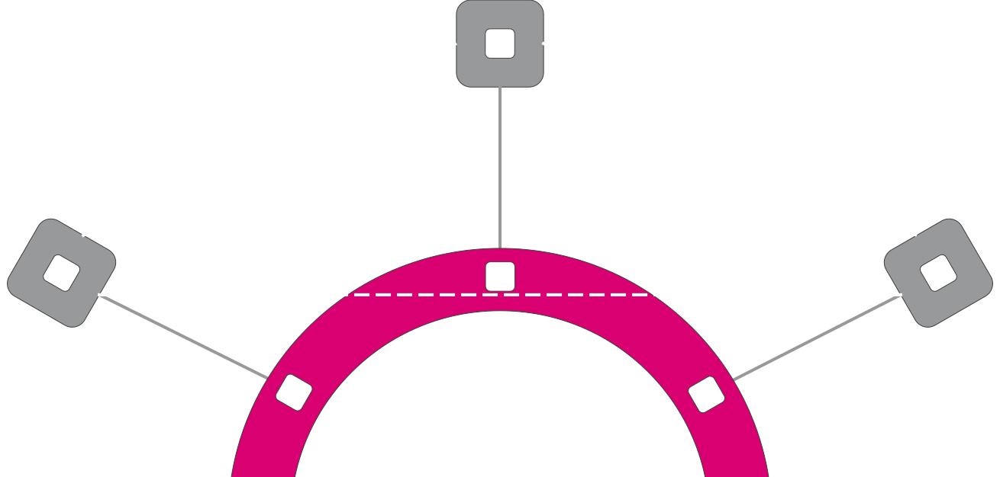

Polkadot provides interchain communication by default to all Parachains.
</script></section><section  data-markdown><script type="text/template">
## Horizontal Relay-Routed Message Passing (HRMP)

Also known as "XCMP-lite".

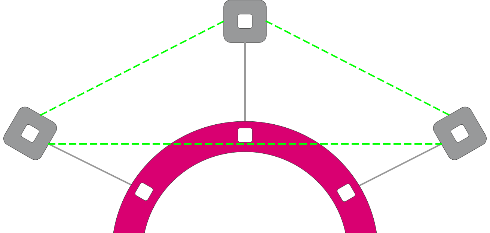

- A temporary solution for enabling parachains to communicate with each other.
- Channels must be explicitly opened by parachains that want to communicate with one another.
- Long term, truly P2P XCMP messages will be enabled.
</script></section><section  data-markdown><script type="text/template">
## Vertical Message Passing (VMP)

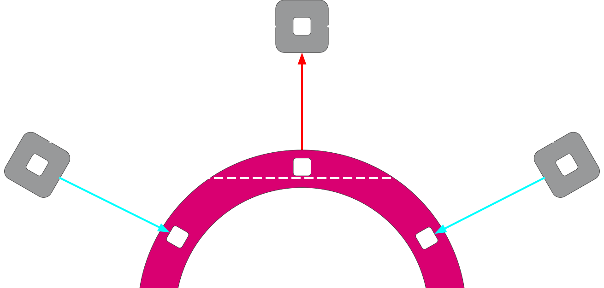

- Upward Message Passing (UMP)
  - A message sent from a parachain to the relay-chain. (blue)
- Downward Message Passing (DMP)
  - A message sent from the relay-chain down to a parachain. (red)
</script></section><section  data-markdown><script type="text/template">
## Bridges


Allow parachains and parathreads to connect and communicate with external networks like Ethereum and Bitcoin.

Networks bridged to Polkadot get access to the whole Parachain network for free.
</script></section><section  data-markdown><script type="text/template">
## Economics of Polkadot

What are the economics principles of Polkadot?
</script></section><section  data-markdown><script type="text/template">
## DOT Token

The DOT token has 3 core utilities:

1. Governance
2. Staking
3. Bonding
</script></section><section  data-markdown><script type="text/template">
## Governance


Polkadot token holders have complete control over the protocol.

All privileges, which on other platforms are exclusive to miners, will be given to the Relay Chain participants (DOT holders), including managing exceptional events such as protocol upgrades and fixes.

<aside class="notes"><p>The first function of DOT is to entitle holders to complete governance control over the platform. Included in this governance function is determining the fees of the network, the auction dynamics and schedule for the addition of parachains, and exceptional events such as upgrades and fixes to the Polkadot platform. These functions are not formally granted to DOT holders, but rather the underlying code of Polkadot will enable DOT holders to participate in governance.</p>
</aside></script></section><section  data-markdown><script type="text/template">
## Staking


Game theory incentivizes token holders to behave in honest ways.

Good actors are rewarded by this mechanism whilst bad actors will lose their stake in the network. This ensures the network stays secure.

<aside class="notes"><p>The second function of DOT will be to facilitate the consensus mechanism that underpins Polkadot. In order for the platform to function and allow for valid transactions to be carried out across parachains, Polkadot will rely on DOT holders to play active roles. Participants will put their DOT at risk (referred to as “staking” or “bonding”) to perform these functions, which acts as a disincentive for malicious participation in the network. DOT required to participate in the network will vary according to the activity undertaken, the duration DOT is staked for, and the total number of DOT staked.</p>
</aside></script></section><section  data-markdown><script type="text/template">
## Bonding


New parachains are added by bonding tokens.

Outdated or non-useful parachains are removed by removing bonded tokens, or trading with other parathreads. DOTs bonded are returned in full at the end of the parachain's lease period. This is a form of proof of stake.

<aside class="notes"><p>The third function of DOT will be the ability to add new parachains by tying up DOT (referred to as “bonding”). The DOT will be locked during their bonding period and will be released back to the account that bonded them after the duration of the bond has elapsed and the parachain is removed.</p>
</aside></script></section><section  data-markdown><script type="text/template">
## Relay Chain Fees

- Automatically adjusts based on traffic and demand of the Relay Chain.
- 80% of fees sent to the treasury.
- 20% of fees given to the block producer.
- "tip" can be given directly to block producer to increase the transaction priority.
</script></section><section  data-markdown><script type="text/template">
## Token Inflation

- DOT tokens inflates at ~7.7%.
- New tokens used to incentivize the validators.
- Inflation is hedged against the exponential growth and value add of the network.
- A percentage of DOT tokens in the treasury are burned if they are not allocated to public projects.
</script></section><section  data-markdown><script type="text/template">
## Parachains Operate Feelessly

- Parachains pay no fees beyond their initial DOT bond, which is returned in full at the end of the lease period.
- Block execution, message passing, and shared security come at no additional cost over time.
- Parachain slots can even be given away for free via governance (common good parachains).
- Enables all sorts of Web3 systems which would not exist in a fee-based economy.
</script></section><section  data-markdown><script type="text/template">
## The Development of Polkadot

How will Polkadot evolve over time?
</script></section><section  data-markdown><script type="text/template">
## Substrate

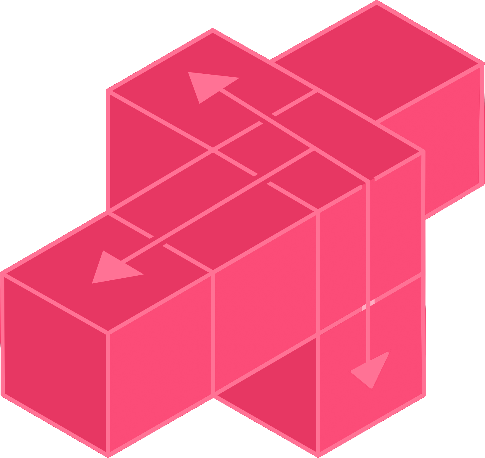

Polkadot is build with the most extensible, modular, and easy to use blockchain framework.

Polkadot and Parachains will reap the benefits of this framework as it develops and evolves over time.
</script></section><section  data-markdown><script type="text/template">
## Runtime Upgrades

38 Runtime Upgrades So Far!

<div class="spec-container">
<div class="spec-block" style="background-color: #e6007a;">9230</div>
<div class="spec-block" style="background-color: #df067e;">9220</div>
<div class="spec-block" style="background-color: #d80c82;">9200</div>
<div class="spec-block" style="background-color: #d11286;">9190</div>
<div class="spec-block" style="background-color: #ca188a;">9180</div>
<div class="spec-block" style="background-color: #c31e8e;">9170</div>
<div class="spec-block" style="background-color: #bc2492;">9151</div>
<div class="spec-block" style="background-color: #b52a96;">9140</div>
<div class="spec-block" style="background-color: #ae309a;">9122</div>
<div class="spec-block" style="background-color: #a7369e;">9110</div>
<div class="spec-block" style="background-color: #a03ca2;">9100</div>
<div class="spec-block" style="background-color: #9943a6;">9090</div>
<div class="spec-block" style="background-color: #9249aa;">9080</div>
<div class="spec-block" style="background-color: #8b50ae;">9050</div>
<div class="spec-block" style="background-color: #8456b2;">30</div>
<div class="spec-block" style="background-color: #7d5db6;">29</div>
<div class="spec-block" style="background-color: #7663ba;">28</div>
<div class="spec-block" style="background-color: #6f6abe;">27</div>
<div class="spec-block" style="background-color: #6a6ec1;">26</div>
<div class="spec-block" style="background-color: #6572c4;">25</div>
<div class="spec-block" style="background-color: #6176c7;">24</div>
<div class="spec-block" style="background-color: #5c7aca;">23</div>
<div class="spec-block" style="background-color: #587ecd;">18</div>
<div class="spec-block" style="background-color: #5382d0;">17</div>
<div class="spec-block" style="background-color: #4f86d3;">16</div>
<div class="spec-block" style="background-color: #4a8ad6;">15</div>
<div class="spec-block" style="background-color: #468ed8;">14</div>
<div class="spec-block" style="background-color: #4193db;">13</div>
<div class="spec-block" style="background-color: #3d97dd;">12</div>
<div class="spec-block" style="background-color: #389ce0;">11</div>
<div class="spec-block" style="background-color: #34a0e2;">10</div>
<div class="spec-block" style="background-color: #2da7e6;">9</div>
<div class="spec-block" style="background-color: #26aeea;">8</div>
<div class="spec-block" style="background-color: #22b2ec;">7</div>
<div class="spec-block" style="background-color: #1bb9f0;">6</div>
<div class="spec-block" style="background-color: #10c5f7;">5</div>
<div class="spec-block" style="background-color: #0bc9f9;">1</div>
<div class="spec-block" style="background-color: #00d4ff;">0</div>
</div>
</script></section><section  data-markdown><script type="text/template">
## Kusama


A "chaotic", value-bearing canary network for the Polkadot ecosystem.
</script></section><section  data-markdown><script type="text/template">
## Rococo


A stable, non-value-bearing test network for parachain teams and the developer community.
</script></section><section  data-markdown><script type="text/template">
## Treasury


Polkadot ensures that a portion of all network fees is collected to pay people to help grow Polkadot itself.

Tokens are burned if they are not spent, creating pressure to fund public projects which promote Polkadot.
</script></section><section  data-markdown><script type="text/template">
## Governance V2

- New governance system (Gov2) near release.
- 50% of total tokens, with enough conviction, can decide the fate of the chain.
- No "first class citizens", like Council or Technical Committee.
- Simply one decision-making mechanism: the public referendum.
- Origins and Tracks
  - Origins of varying power levels.
  - Variable number of tracks based on origin.
- Multirole Delegation
- Fellowship and Whitelist
</script></section><section  data-markdown><script type="text/template">
## Super-Scalability

- Polkadot Cubed
- Blitz Chains
- Non-Persistent Trie
</script></section><section  data-markdown><script type="text/template">
# Questions?
</script></section>
      </article>
    </main>

    <script src="./../../../dist/reveal.js"></script>
    <script src="./../../../plugin/markdown/markdown.js"></script>
    <script src="./../../../plugin/highlight/highlight.js"></script>
    <script src="./../../../plugin/zoom/zoom.js"></script>
    <script src="./../../../plugin/notes/notes.js"></script>
    <script src="./../../../plugin/math/math.js"></script>

    <script type="module">
      import DesignSystem from "./../../../plugin/design-system/design-system.js"

      function extend() {
        var target = {};
        for (var i = 0; i < arguments.length; i++) {
          var source = arguments[i];
          for (var key in source) {
            if (source.hasOwnProperty(key)) {
              target[key] = source[key];
            }
          }
        }
        return target;
      }

      // default options to init reveal.js
      var defaultOptions = {
        controls: true,
        progress: true,
        history: true,
        center: true,
        transition: 'default', // none/fade/slide/convex/concave/zoom
        plugins: [
          RevealMarkdown,
          RevealHighlight,
          RevealZoom,
          RevealNotes,
          RevealMath,
          DesignSystem
        ]
      };

      // options from URL query string
      const queryOptions = Reveal().getQueryHash() || {};

      const options = extend(defaultOptions, {"width":1400,"height":900,"margin":0,"minScale":0.2,"maxScale":2,"transition":"none","controls":true,"progress":true,"center":true,"slideNumber":true,"backgroundTransition":"fade"}, queryOptions);
      options.baseUrl = '';
      Reveal.initialize(options);
    </script>
  </body>
</html>
